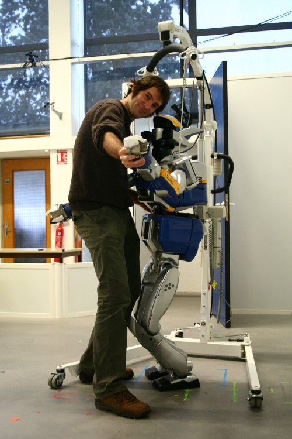

Séverin Lemaignan

- Post-doctoral researcher, Human-Robot Interaction, Cognitive Robotics, Robotics for Learning
- ORCID record: 0000-0002-3391-8876
- EPFL, Faculty of Computer Sciences, Computer-Human Interaction for Laerning and Instruction (CHILI lab)
- Email: severin.lemaignan@epfl.ch
- Telephone: +41 21 69 32 611
- Office: CHILI Lab, Rolex Learning Center
Latest News
January 2015
We've got awarded the AAAI 2015 Best Video Award for the CoWriter project! Congratulations to Deanna Hood, the Master student who carried this project!
December 2014
I will present two papers during the Human_Robot Interaction
Conference next March: one the the CoWriter project, one on new
perspectives towards implementing a Theory of Mind for
robots. Check the Publications section below to
download the papers.
September 2014
I've been awarded the Best PhD in Robotics 2012 prize by the French CNRS.
Research topics
I focus my research on human-robot interaction. A few questions I attempt to address: how to let a robot build a mental models of the humans it interacts with? What behaviours favor the long-term acceptance of the robot? What are the human's psychological determinants that influence our relationship with robot? How to assess the cognitive skills of our robots?
I try to answer these questions in both fundamental and practical ways. I have proposed models of how human and robot interact, I develop cognitive architectures for robots, and I also conduct regular lab and field experiments.
I also design and write open-source software architectures and tools that I deploy on different robotic platforms (from Willow Garage's PR2 to Aldebaran's Nao). Those include knowledge bases, a natural language processor with semantic grounding, a set of Python tools for executive control of robots, a state-of-the-art simulator.
Curriculum
In September 2014, I've been awarded the Best PhD in Robotics 2012 prize by the French CNRS.
Since March 2013, I'm a post-doctoral fellow at the EPFL, Lausanne, Switzerland, in the Computer-Human Interaction for Laerning and Instruction (CHILI lab). I'm in charge of coordinating the robotic group and developing research in robotic-based learning technologies.
I was previously post-doctoral fellow at the LAAS-CNRS research institute, in the Robotics and Interactions group, working on higher cognition for robots (knowledge management, dialogue, theory of mind...).
I've defended my PhD thesis in July 2012. I prepared it at LAAS-CNRS, in joint supervision with the TU Muenchen.
Before, I've been working for a year as engineer in mobile robotics at the INRIA national institute for computing sciences.
I've first studied mechanical engineering both in France (Diplôme d'ingénieur Arts et Métiers ParisTech) and in Germany (Dipl. Ing. in Maschinenbau, Karlsruhe Institute of Technology).
I hold as well a master degree in Computer Sciences applied to Education from Université Paris 5.
My detailed resume can be downloaded here.Publications
List of my publications on Google ScholarDissertation
- Grounding the Interaction: Knowledge Management for Interactive Robots, 2012 (show bibtex) (watch the slides) Best 2012 PhD in Robotics Award from CNRS
Journals
- [under review] Dynamics of Anthropomorphism in Human-Robot Interaction,
Frontiers in Cognitive Science, 2014 (show bibtex)
Fink, J. and Lemaignan, S. and Braboszcz, C. and Dillenbourg, P. - [in press] Human-Robot Interaction: Tackling the AI Challenges,
Artificial Intelligence, 2014 (show bibtex)
Lemaignan, S. and Warnier, M. and Sisbot, E. A. Alami, R. -
Grounding the Interaction: Knowledge Management for Interactive Robots [dissertation abstract], Künstliche Intelligenz, 2013 (show bibtex)
Lemaignan, S. - Towards a Platform-Independent Cooperative Human-Robot Interaction System: III. An Architecture for Learning and Executing Actions and Shared Plans, IEEE Transactions on Autonomous Mental Development, 2012 (show bibtex)
Lallée, S. and Pattacini, U. and Lemaignan, S. and Lenz, A. and Melhuish, C. and Natale, L. and Skachek, S. and Hamann, K. and Steinwender, J. and Sisbot, E.A. and Metta, G. and Pipe, T. and Alami, W. and Warnier, M. and Guitton, J. and Warneken, F. and Dominey, P.F. -
Grounding the Interaction: Anchoring Situated Discourse in Everyday Human-Robot Interaction
, International Journal of Social Robotics, 2011 (show bibtex)
Lemaignan, S. and Ros, R. and Sisbot, E. A. Alami, R. and Beetz M.
Conferences Articles
2015
- Mutual Modelling in Robotics: Inspirations for the Next Steps, HRI 2015 (show bibtex)
Lemaignan, S. and Dillenbourg, P. - When Children Teach a Robot to Write: An Autonomous Teachable Humanoid Which Uses Simulated Handwriting, HRI 2015 (show bibtex)
Hood, D. and Lemaignan, S. and Dillenbourg, P.
2014
- Ranger, an Example of Integration of Robotics into the Home Ecosystem, MESROB 2014 (show bibtex)
Mondada, F. and Fink, J. and Lemaignan, S. and Mansolino, D. and Wille, F. and Franinović, K. - Which Robot Behavior Can Motivate Children to Tidy up Their Toys? Design and Evaluation of “Ranger”, HRI 2014 (show bibtex)
Fink, J. and Rétornaz, P. and Vaussard, F. and Wille, F. and Franinović, K. and Berthoud, A. and Lemaignan, S. and Dillenbourg, P. and Mondada, F. - Simulation and HRI -- Recent Perspectives with the MORSE Simulator, SIMPAR 2014 (show bibtex)
Lemaignan, S. and Hanheide, M. and Karg, M. and Khambhaita, H. and Kunze, L. and Lier, F. and Lütkebohle, I. and Milliez, G. - The Cognitive Correlates of Anthropomorphism, HRI 2014 - Workshop "HRI: a bridge between Robotics and Neuroscience" (show bibtex)
Lemaignan, S. and Fink, J. and Dillenbourg, P. and Braboszcz, C. - Which Robot Behavior Can Motivate Children to Tidy up Their Toys? Design and Evaluation of “Ranger”, HRI 2014 (show bibtex)
Fink, J. and Rétornaz, P. and Vaussard, F. and Wille, F. and Franinović, K. and Berthoud, A. and Lemaignan, S. and Dillenbourg, P. and Mondada, F.
2013
-
Explicit Knowledge and the Deliberative Layer: Lessons Learned, IROS 2013 (show bibtex)
Lemaignan, S. and Alami, R.
2012
- Simulating complex robotic scenarios with MORSE, SIMPAR 2012 (show bibtex)
Echeverria, G. and Lemaignan, S. and Degroote, A. and Lacroix, S. and Karg, M. and Koch, P. and Lesire, C. and Stinckwich, S. -
When the Robot Puts Itself in Your Shoes. Managing and Exploiting Human and Robot Beliefs, ROMAN 2012 (show bibtex)
Warnier, M. and Guitton, J. and Lemaignan, S. and Alami, R.
2011
-
When the robot considers the human...
, ISRR 2011 (show bibtex)
Alami, R. and Warnier, M. and Guitton, J. and Lemaignan, S. and Sisbot, E. A. -
Towards a Platform-Independent Cooperative Human-Robot Interaction System: II. Perception, Execution and Imitation of Goal Directed Actions
, IROS 2011 (show bibtex)
Lallée, S. and Pattacini, U. and Boucher J.D. and Lemaignan, S. and Lenz, A. and Melhuish, C. and Natale, L. and Skachek, S. and Hamann, K. and Steinwender, J. and Sisbot, E.A. and Metta, G. and Alami, W. and Warnier, M. and Guitton, J. and Warneken, F. and Dominey, P.F. -
What are you talking about? Grounding dialogue in a perspective-aware robotic architecture
, ROMAN 2011 (show bibtex)
Lemaignan, S. and Ros, R. and Alami, R. and Beetz, M. -
Modular Open Robots Simulation Engine: MORSE,
ICRA 2011 (show bibtex)
Echeverria, G. and Lassabe, N. and Degroote, A. and Lemaignan, S.
2010
-
ORO, a knowledge management module for cognitive architectures in robotics
, IROS 2010 (show bibtex)
Lemaignan, S. and Ros, R. and Mösenlechner, L. and Alami, R. and Beetz, M. -
Which One? Grounding the Referent Based on Efficient Human-Robot Interaction
, ROMAN 2010 Best paper award (show bibtex)
Ros, R. and Lemaignan, S. and Sisbot, E. A. and Alami, R. and Steinwender, J. and Hamann, K. and Warneken, F. -
Towards a Platform-Independent Cooperative Human-Robot Interaction System: I. Perception
, IROS 2010 (show bibtex)
Lallée, S. and Lemaignan, S. and Lenz, A. and Melhuish, C. and Natale, L. and Skachek, S. and van Der Zant, T. and Warneken, F. and Dominey, P.F. - GenoM3:
Building middleware-independent robotic components,
ICRA 2010 (show bibtex)
Mallet, A. and Pasteur, C. and Herrb, M. and Lemaignan, S. and Ingrand F.
Book Chapters
- [in press] Towards Grounding Human-Robot Interaction, in Bridges between the Methodological and Practical Work of the Robotics
and Cognitive Systems Communities - From Sensors to Concepts, Springer Publishing, 2012 (show bibtex)
Lemaignan, S. and Alami, R. and Pandey, A. K. and Warnier, M. and Guitton, J.
Short peer-reviewed publications
- The CoWriter Project: Teaching a Robot how to Write
, HRI 2015 (video) (show bibtex) (watch video)
Hood, D. and Lemaignan, S. and Alami, R. - A Few AI Challenges Raised while Developing an Architecture for Human-Robot Cooperative Task Achievement
, AAAI 2014 Fall Symposium Series - Artificial Intelligence and Human-Robot Interaction (show bibtex)
Lemaignan, S. and Alami, R. - The Dynamics of Anthropomorphism in Robotics
, HRI 2014 Best Late Breaking Report Award (show bibtex)
Lemaignan, S. and Fink, J. and Dillenbourg, P. - Talking to my Robot: from Knowledge Grounding to Dialogue Processing
, HRI 2013 (video) (show bibtex) (watch the video)
Lemaignan, S. and Alami, R. - Natural Interaction for Object Hand-Over
, HRI 2013 (video) (show bibtex) (watch the video)
Gharbi, M. and Lemaignan, S. and Mainprice, J. and Alami, R. - Roboscopie: A Theatre Performance for a Human and a Robot
, HRI 2012 (video) (show bibtex) (watch the video)
Lemaignan, S. and Gharbi, M. and Mainprice, J. and Herrb, M. and Alami, R. - Human-Robot Interaction in the MORSE Simulator
, HRI 2012 (late breaking report) (show bibtex)
Lemaignan, S. and Echeverria G. and Karg, M. and Mainprice, M. and Kirsch, A. and Alami, R. -
Dialogue in situated environments: A symbolic approach to perspective-aware grounding, clarification and reasoning for robots
, Grounding Human-Robot Dialog for Spatial Tasks - RSS 2011 workshop (extended abstract) (show bibtex)
Lemaignan, S. and Ros, R. and Alami, R. -
Anchoring interaction through symbolic knowledge
, talk HRI Pioneers 2011 (show bibtex)
Lemaignan, S. and Sisbot, E. A. and Alami, R. -
Robot, tell me what you know about...?: Expressing robot's knowledge through interaction
, ICAIR 2010 (show bibtex)
Ros, R. and Sisbot, E. A. and Lemaignan, S. and Pandey, A. K. and Alami, R.
Other short publications
-
Taught by Children: A New Role for Robots?, Journées Nationales de la Robotique Interactive 2014 (show bibtex)
Lemaignan, S. and Hood, D. and Dillenbourg, P. -
Am I capable yet? (position paper), HRI 2014 -- Cognitive Architectures Workshop (show bibtex)
Lemaignan, S. -
On robot decisional abilities for human-robot joint action (poster), JAM 2013 (show bibtex)
Clodic, A. and Lemaignan, S. and Pandey, A. K. and da Silva, L. and Warnier, M. and Alami, R.
Older publications
- Networking Needs and Solutions for Road Vehicles at Imara,
ITST 2007 (show bibtex)
- SqueakBot: a Pedagogical Robotic Platform,
C5 Conference, 2007 (show bibtex)
- La Boite à Bots : quand la robotique s'ouvre à tous,
Linux+DVD (show bibtex)
- MASON: A proposal for
an
ontology of manufacturing domain, IEEE Workshop on
Distributed Intelligent Systems (DIS), 2006 (show bibtex)
Selected Talks
I link below the slides for some of the talks and seminars I've given over the last years. Some of the presentations are written in HTML5. Use the arrow keys to navigate. Note that some videos may take time to load.
2013
- From Semantic Web to Robot Cognition (invited talk @INNOROBO, Lyon, March 2013)
2012
- Cognition for Companion Robotics (@ DESIR-LIP6/UMPC, Paris, Nov. 2012 -- @CRAFT/EPFL, Lausanne, Oct. 2012)
- Geometric & Temporal Reasoning: Towards the next generation (@LAAS, Toulouse, Oct. 2012)
- Ontologies and Robotics: present and future (@LAAS, Toulouse, Oct. 2012)
- PhD defense (@LAAS, Toulouse, Jul. 2012)
2010
- What can we do with ontologies for HRI (Dagstuhl seminar, Oct. 2010)
Teaching & Student Supervision
Student Supervision
- Alexis Jacq (PhD student): Mutual Modelling in Human-Robot Interaction (2014-)
- Anahita Hosseini (Master student): Advanced logging for the pyRobots executive controller (2014)
- Ayberk Özgür (PhD student): Cellulo project: paper robots for large-scale robotic deployments in schools (2014-)
- Deanna Hood (Master student): CoWriter project: Getting Nao to write on a tactile tablet (2014)
- Shruti Chandra (PhD student): CoWriter project: learning by teaching handwriting to a robot (2013-2014)
- Julia Fink (PhD student): Long-term acceptance of robots in daily life, Anthropomorphism (2013-2014)
- Patrick Tsemengue, Mahdi Chouayakh (Master students): The Dialogs natural language processor (2010)
2008-2014: Support lectures at EPFL, LAAS-CNRS and Université Paul Sabatier
- Introduction to GIT
- Introduction to ROS, the Robot Operating System (slides, Jan. 2013)
- Introduction to the MORSE Simulator (slides, Dec. 2012)
- Introduction to ontologies (slides in French, Dec. 2010)
- Software Development Good Practises
- Python for robotics
2008-2011: Teaching assistant at INSA Toulouse
- Prolog and Artifical Intelligence, Institut National des Sciences Appliquées
- ADA - Initiation to programming, Institut National des Sciences Appliquées
- Advanced Java, Institut National des Sciences Appliquées
- SQL Databases, Institut National des Sciences Appliquées
2006-2007
- Teaching assistant in mechatronics, École Nationale Supérieur des Mines de Paris
Since 2006
- Numerous training in Educational Robotics, Planete Sciences association
Misc
The human-robot theatre performance Roboscopie
Roboscopie homepage, where you can watch the full-length version.